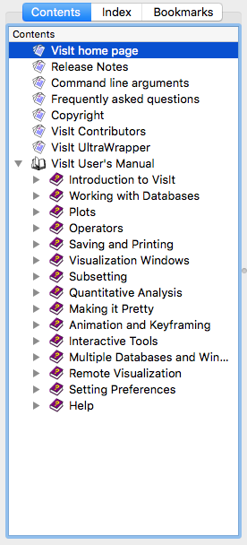
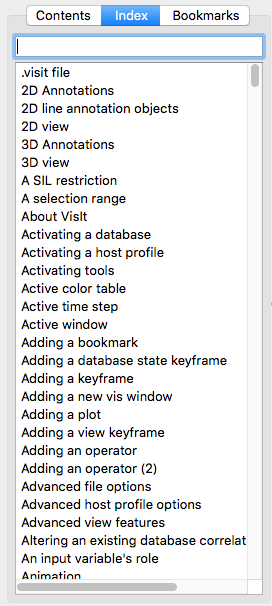

16.2. Help Window¶
VisIt’s Help Window, shown in Figure 16.2, displays all of VisIt’s online help content. You can open the Help Window by choosing the Help option from the Main Window’s Help menu. The Help Window has a toolbar along the top of the window while the rest of the window is divided vertically into two main areas. The left side of the window is used to select online help pages and it is further divided with tabs for help contents, help index, and bookmarks. The right side of the window displays the content for the online help pages.
Fig. 16.2 Help window
16.2.1. Help Window Toolbar¶
The Help Window’s toolbar exposes buttons for navigation, changing font size, and adding bookmarks. You can hide the toolbar by double-clicking on the handle located at the far left of the toolbar. The toolbar can also be moved to other parts of the Help Window by clicking on its handle and dragging it to the top, sides, or the bottom of the Help Window.
16.2.1.2. Changing font size¶
The toolbar contains two buttons that allow you to change the font size used to display online help. The Larger font button is distinguished by a large capital `A’ and a small triangle which points up. When the Larger font button is clicked, the font size is increased and the active help page is redrawn with the larger font. The Smaller font button looks similar to the Larger font button except that its icon’s triangle points down and its `A’ is smaller. The Smaller font button decreases the font size and immediately redraws the active help page using the new smaller font.
16.2.1.3. Adding a bookmark¶
VisIt’s Help Window provides the ability to create and save personal bookmarks. This allows you to easily come back to frequently-used sections of the online help. The toolbar contains an Add bookmark button that adds the current help page to the list of bookmarks. The Bookmarks tab in the left part of the Help Window also has this feature.
16.2.2. Selecting a help page¶
The Help Window has three tabs, shown in Figure 16.3, that allow a help page to be located in different ways. The first tab is the Contents tab and it lists all of the online help pages and allows them to be grouped into related topics. The Index tab lists all of the online help pages in an alphabetized list that can be searched for a particular help topic. The Bookmarks tab shows all bookmarked help pages which can be recalled by clicking on a bookmark.
 Fig. 16.3 Help tabs
16.2.2.1. Contents tab¶
The Contents tab lists all of the online help pages and groups them into related topics which are sometimes organized in tree format. When items are organized into a tree, an entry in the list of help pages often has a book icon next to it indicating that the topic contains other help topics. When an item has a book icon, it can be opened by double-clicking on its title or by clicking the check box to the left of the title. Items that have an icon that looks like a stack of papers contain the actual help content and clicking on them displays the help page in the right half of the Help Window.
16.2.2.2. Index tab¶
The Index tab lists all of the help topics alphabetically in a single searchable list. Help topics can be selected by clicking on an item in the list or by typing a help topic into the text field above the list. As words are typed into the text field, the closest match is found in the list of help topics and the topic is displayed in the right half of the Help Window.
16.2.2.3. Bookmarks tab¶
The Bookmarks tab lists all of the help topics that have been bookmarked for further use. To view a page that has been previously bookmarked, simply click on its title in the bookmark list. To add a bookmark for the current help page, click the Add button in the Bookmarks tab or in the Help Window’s toolbar. To remove a bookmark, click on its title in the bookmark list and then click the Remove button.